Risk graphs — Wednesday, November 11, 2026
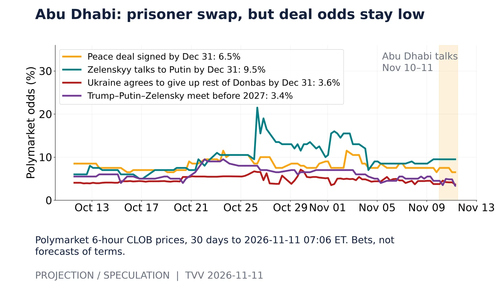
Abu Dhabi: prisoner swap, but deal odds stay low. Polymarket 6-hour CLOB prices, 30 days to 2026-11-11 07:06 ET. Bets, not forecasts of terms.Source: https://polymarket.com/event/russia-x-ukraine-ceasefire-agreement-by 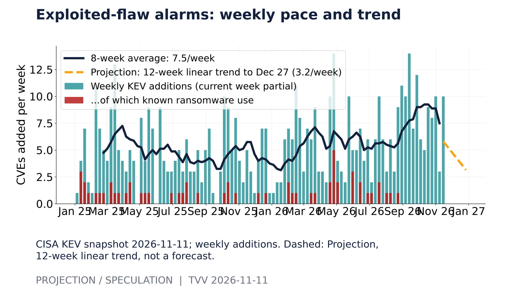
Exploited-flaw alarms: weekly pace and trend. CISA KEV snapshot 2026-11-11; weekly additions. Dashed: Projection, 12-week linear trend, not a forecast.Source: https://www.cisa.gov/sites/default/files/feeds/known_exploited_vulnerabilities.json 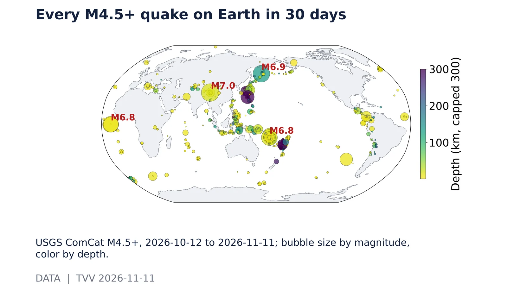
Every M4.5+ quake on Earth in 30 days. USGS ComCat M4.5+, 2026-10-12 to 2026-11-11; bubble size by magnitude, color by depth.Source: https://earthquake.usgs.gov/fdsnws/event/1/query?format=geojson&starttime=2026-10-12&endtime=2026-11-11T12:00:00&minmagnitude=4.5 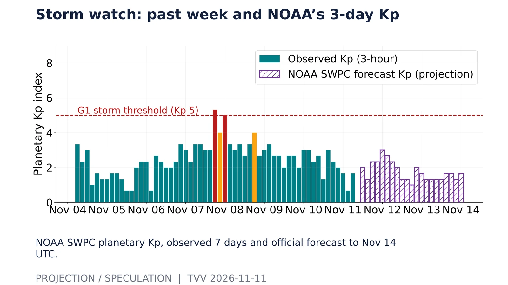
Storm watch: past week and NOAA’s 3-day Kp. NOAA SWPC planetary Kp, observed 7 days and official forecast to Nov 14 UTC.Source: https://services.swpc.noaa.gov/products/noaa-planetary-k-index.json 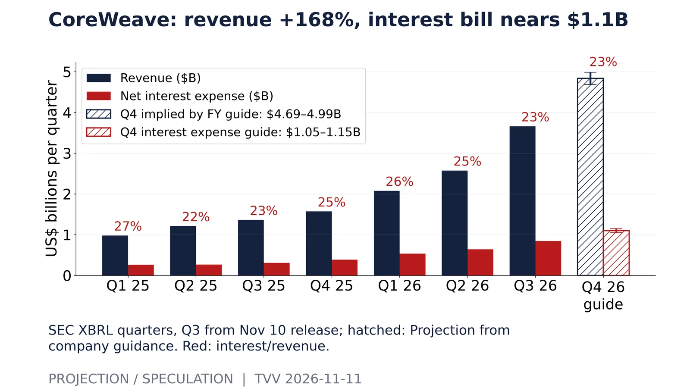
CoreWeave: revenue +168%, interest bill nears $1.1B. SEC XBRL quarters, Q3 from Nov 10 release; hatched: Projection from company guidance. Red: interest/revenue.Source: https://investors.coreweave.com/news/news-details/2026/CoreWeave-Reports-Strong-Third-Quarter-2026-Results/default.aspx 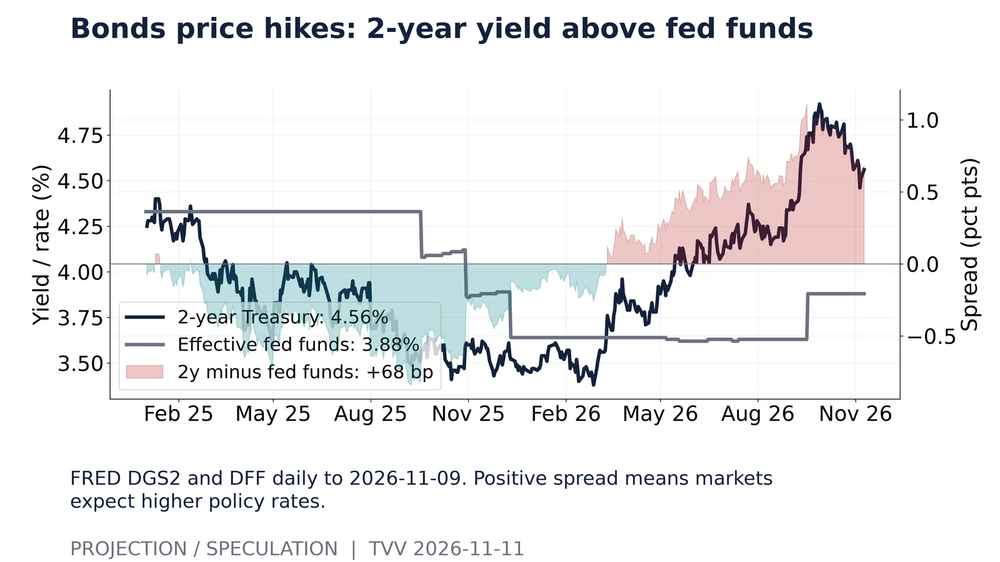
Bonds price hikes: 2-year yield above fed funds. FRED DGS2 and DFF daily to 2026-11-09. Positive spread means markets expect higher policy rates.Source: https://fred.stlouisfed.org/graph/fredgraph.csv?id=DGS2 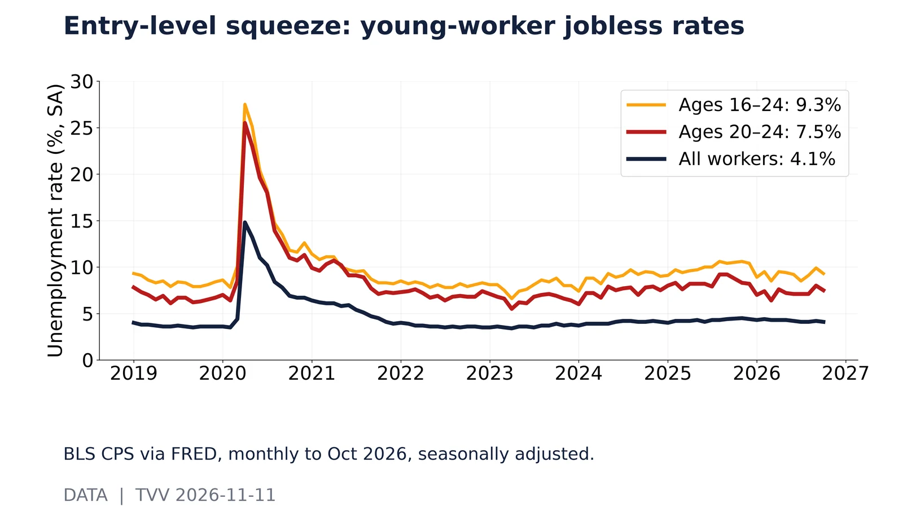
Entry-level squeeze: young-worker jobless rates. BLS CPS via FRED, monthly to Oct 2026, seasonally adjusted.Source: https://fred.stlouisfed.org/graph/fredgraph.csv?id=LNS14000036 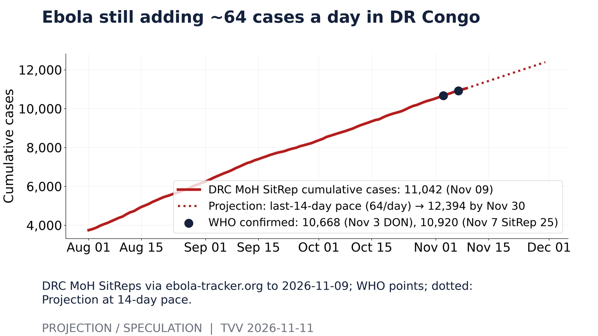
Ebola still adding ~64 cases a day in DR Congo. DRC MoH SitReps via ebola-tracker.org to 2026-11-09; WHO points; dotted: Projection at 14-day pace.Source: https://ebola-tracker.org/data/base-ebola-rdc.csv 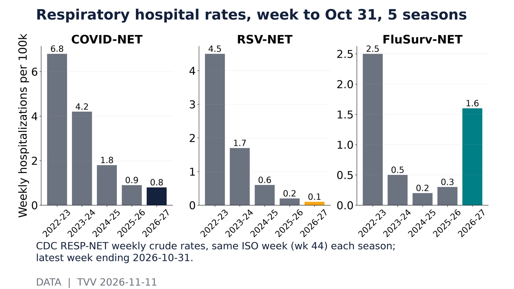
Respiratory hospital rates, week to Oct 31, 5 seasons. CDC RESP-NET weekly crude rates, same ISO week (wk 44) each season; latest week ending 2026-10-31.Source: https://data.cdc.gov/resource/kvib-3txy.json 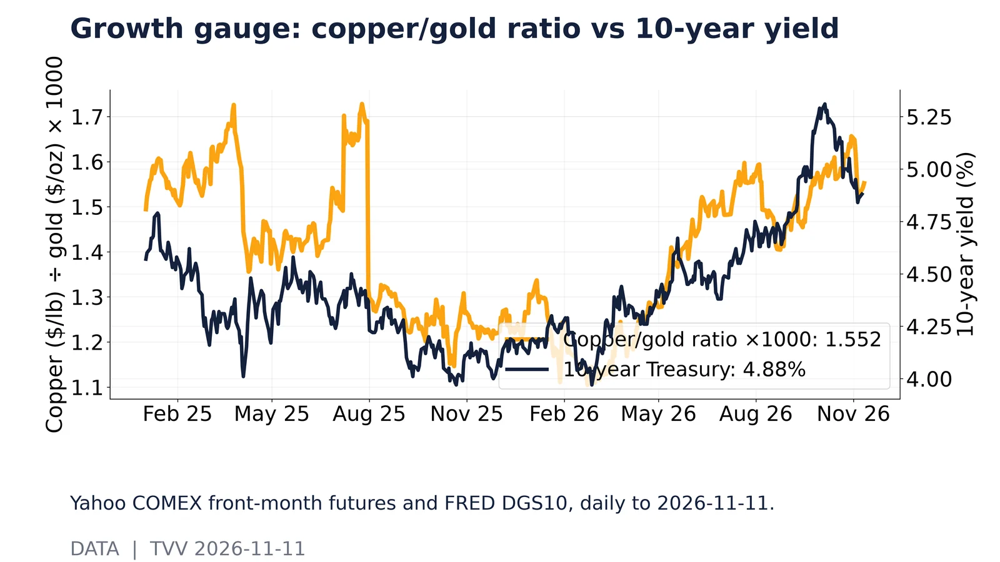
Growth gauge: copper/gold ratio vs 10-year yield. Yahoo COMEX front-month futures and FRED DGS10, daily to 2026-11-11.Source: https://query1.finance.yahoo.com/v8/finance/chart/HG=F?range=2y&interval=1d 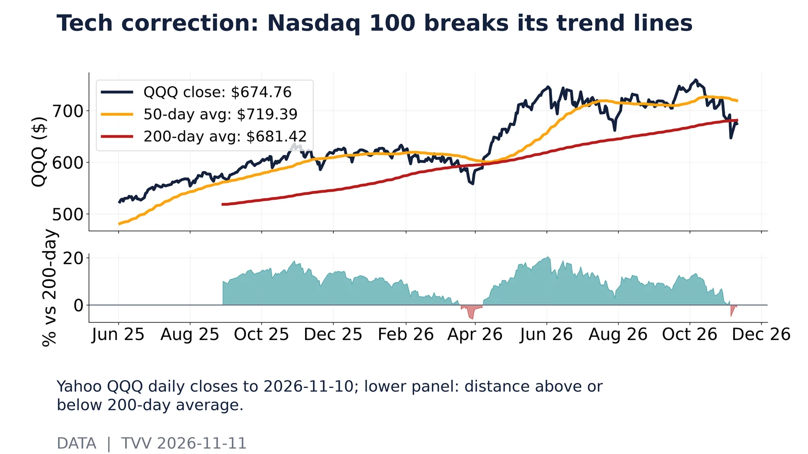
Tech correction: Nasdaq 100 breaks its trend lines. Yahoo QQQ daily closes to 2026-11-10; lower panel: distance above or below 200-day average.Source: https://query1.finance.yahoo.com/v8/finance/chart/QQQ?range=2y&interval=1d 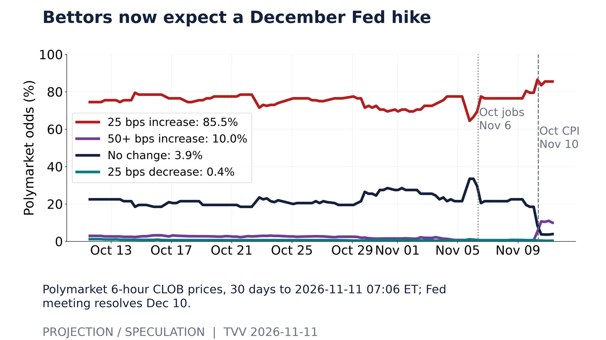
Bettors now expect a December Fed hike. Polymarket 6-hour CLOB prices, 30 days to 2026-11-11 07:06 ET; Fed meeting resolves Dec 10.Source: https://polymarket.com/event/fed-decision-in-december-20260729232808632 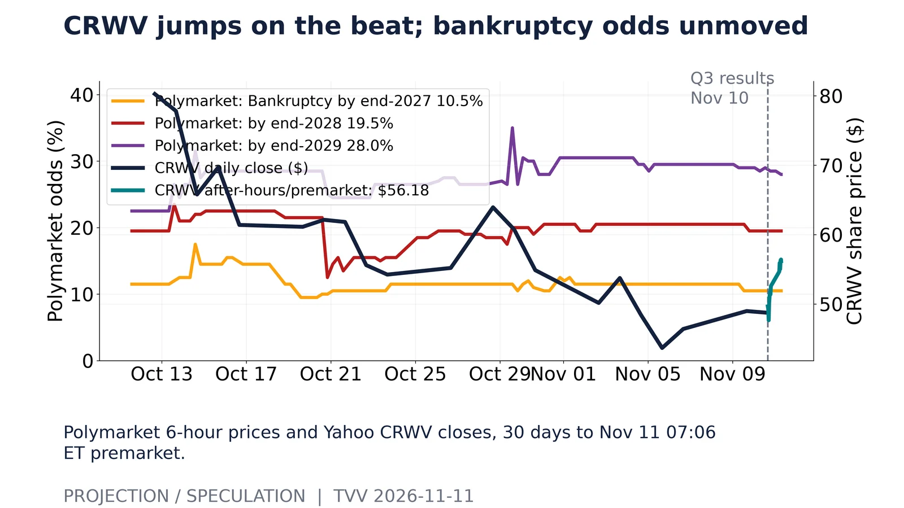
CRWV jumps on the beat; bankruptcy odds unmoved. Polymarket 6-hour prices and Yahoo CRWV closes, 30 days to Nov 11 07:06 ET premarket.Source: https://polymarket.com/event/coreweave-announces-bankruptcy-by 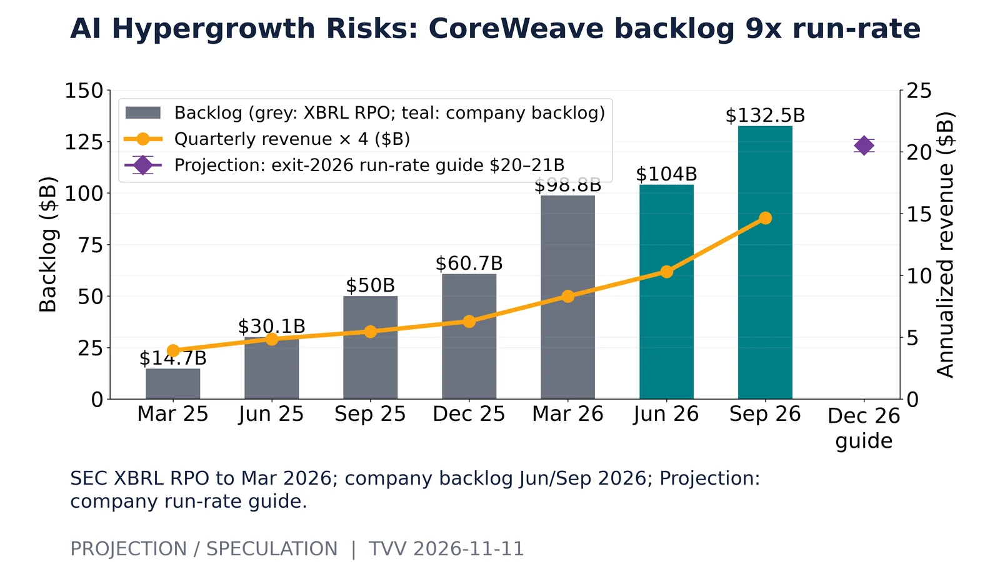
AI Hypergrowth Risks: CoreWeave backlog 9x run-rate. SEC XBRL RPO to Mar 2026; company backlog Jun/Sep 2026; Projection: company run-rate guide.Source: https://investors.coreweave.com/news/news-details/2026/CoreWeave-Reports-Strong-Third-Quarter-2026-Results/default.aspx